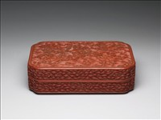
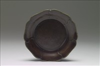
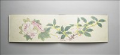
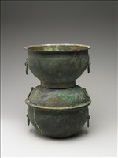
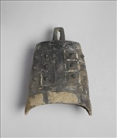
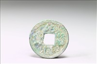

圖鑑管理
| 文物 | 原始年代 | 分類 | 尺寸 | 來源授權 | 啟用 | |
|---|---|---|---|---|---|---|
 銅胎畫琺瑯西洋母子圖鼻煙壺 | 清 乾隆 | 琺瑯器 | 5.5 × 3.8 × 2.4 公分 | CC-BY-4.0 | 啟用 | 編輯 |
 剔紅天馬紋長方盒 | 清 乾隆 | 漆器 | 25.7 × 16.0 × 7.0 公分 | CC-BY-4.0 | 啟用 | 編輯 |
 褐漆葵花式盤 | 宋至元 | 漆器 | 高 2.7、口徑 15.7 公分 | CC-BY-4.0 | 啟用 | 編輯 |
 玉劍璏 | 西漢中期至東漢 | 玉器 | 8.4 × 2.7 × 1.1 公分 | CC-BY-4.0 | 啟用 | 編輯 |
 畫花卉 冊 | 清 乾隆 | 繪畫 | 21.6 × 12.0 公分 | CC-BY-4.0 | 啟用 | 編輯 |
 鍑甑 | 西漢早期 | 銅器 | 通高 32.8 公分 | CC-BY-4.0 | 啟用 | 編輯 |
 陶編鐘 | 春秋 | 陶瓷 | 待測量 | CC-BY-4.0 | 啟用 | 編輯 |
 元符通寶 | 北宋 | 錢幣 | 待測量 | CC-BY-4.0 | 啟用 | 編輯 |
| 找不到符合條件的文物。 | ||||||